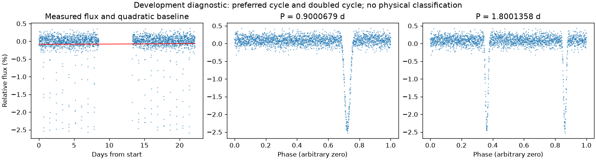
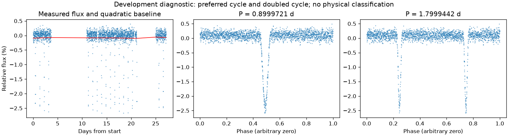

亮度重复，完整绕转周期有歧义
亮度重复周期约 0.90002001 天。仍保留完整绕转周期的歧义。
第二版周期：0.9000679137677307 天；状态：half_double_ambiguous。

左图红线是缓慢基线；右面两图去除该基线。若未通过周期要求，两图只展示得分最高的竞争解释。
| 竞争周期（天） | 交替周期预测改善 | 两组各自改善 | 通过初筛 |
|---|---|---|---|
| 0.9000679 | 92.1% | 92.0% / 92.1% | 是 |
| 1.7997462 | 89.8% | 89.6% / 90.0% | 是 |
| 0.3009438 | 25.0% | 25.5% / 24.5% | 是 |
| 0.6000343 | 24.1% | 20.2% / 27.2% | 是 |
| 0.2257225 | -18.1% | -8.3% / -157.7% | 否 |
| 0.1498824 | -48.0% | -9.7% / -626.0% | 否 |
| 0.4500177 | -110.5% | -1719.2% / -8.0% | 否 |
“预测改善”衡量用一组周期的形状预测另一组，比只有缓慢基线好多少；负数表示更差。搜索和预测共用了资料，因此这不是可信概率，也不是独立验证。
第二版周期：0.8999721013254369 天；状态：half_double_ambiguous。

左图红线是缓慢基线；右面两图去除该基线。若未通过周期要求，两图只展示得分最高的竞争解释。
| 竞争周期（天） | 交替周期预测改善 | 两组各自改善 | 通过初筛 |
|---|---|---|---|
| 0.8999721 | 93.3% | 93.4% / 93.3% | 是 |
| 1.7998381 | 90.8% | 90.7% / 90.9% | 是 |
| 0.2249680 | -52.6% | -135.4% / -21.3% | 否 |
| 0.1124143 | -59.4% | -52.3% / -67.6% | 否 |
| 0.4500259 | -93.8% | -23.4% / -386.2% | 否 |
“预测改善”衡量用一组周期的形状预测另一组，比只有缓慢基线好多少；负数表示更差。搜索和预测共用了资料，因此这不是可信概率，也不是独立验证。